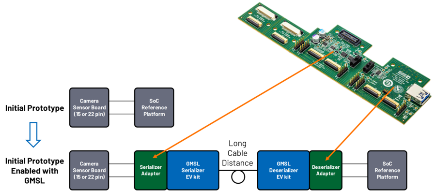
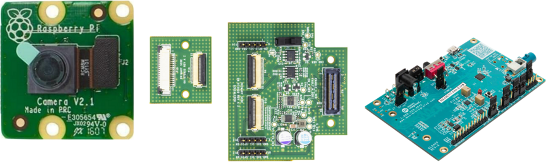
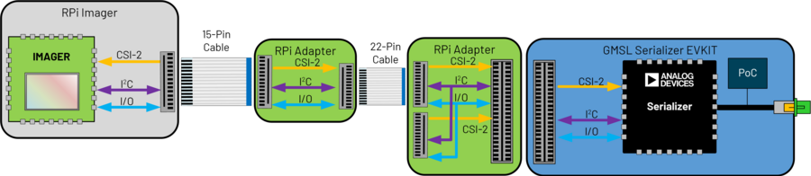
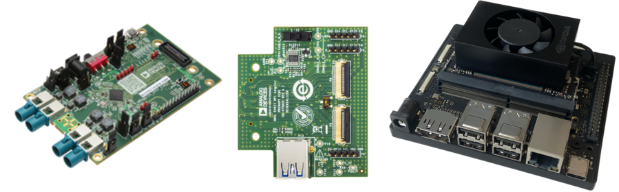
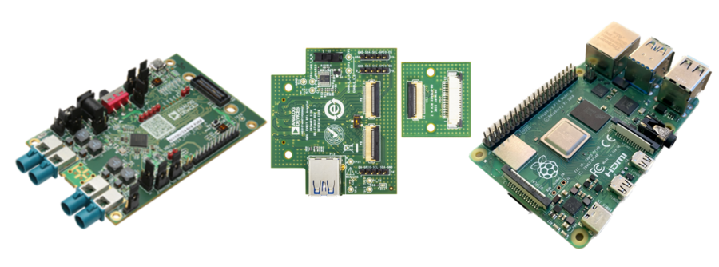

AD-GMSLCAMRPI-ADP
Seamlessly insert GMSL into the signal chain and create a full GMSL Camera System with off the shelf parts.
{kind=link}
Overview
The AD-GMSLCAMRPI-ADP enables connecting GMSL serializer and deserialier Evaluation Kits (EVK) to a wide range of cameras and processing platforms supporting industry standard ribbon cable connectors. The adapter consists of three sections that can be broken apart from each other, with the following functionalities:
A Ribbon Cable Adapter having two pairs of 15-pin and 22-pin connectors routed to each other. The 15-pin connectors support 2 MIPI lanes, while the 22-pin connectors support 4 MIPI lanes.
A GMSL Serializer EVK Adapter with two 22-pin ribbon cable connectors, for connecting cameras to the GMSL serializers. A USB Type-A connector is available to supply 5V @ 4A to another system
A GMSL Deserializer EVK Adapter with two 22-pin ribbon cable connectors, for connecting to Raspberry Pi, Nividia or Xilinx development platforms, or any other processing platform supporting the 15-pin or 22-pin ribbon cable connectors
{kind=link}
{kind=link}
Specifications
Ribbon Cable Adapter |
|
Connectors |
2 x 15 Pin Type A (same side) Flexible Ribbon Cable (2 x MIPI lanes, P/N: 1-84953-5) |
2 x 22 Pin Type B (opposite side) Flexible Ribbon Cable (P/N: 687122149022) |
|
Power |
Routing 3.3V external power between pairs of 15-pin and 22-pin connectors |
GMSL Serializer EVK Adapter |
|
Connectors |
1 x GMSL Serializer EV kit (P/N: QSH-030-01-L-D-A) |
2 x 22-pin (4 x MIPI lanes, P/N: 687122149022) |
|
Power |
Input: 12V from GMSL Serializer EV kit |
Output: 3.3V at 0.5A on the 22-pin connectors |
|
GMSL Deserializer EVK Adapter |
|
Connectors |
1 x GMSL Deserializer EV kit (P/N: QTH-030-01-L-D-A) |
2 x 22-pin (4 x MIPI lanes, P/N: 687122149022) |
|
Power |
Input: 12V from GMSL Deserializer EV kit |
Output: 5V at 4A on the USB Type A connector to power external devices |
Warning
Do not use the 15-pin ribbon cable included with the Raspberry Pi camera since that is an opposite sided cable.
GMSL EV Kit Compatibility
The MIPI-CSI2 signals, I2C communication, and power pins align on the EV kits but the MFP connections can vary.
Refer to the Serializer and Deserializer EV Kit Compatibility Guide to see the connections across EV kits.
Camera Connections
Connect RPi 15-pin cameras to GMSL Serializer EV Kit’s with the 15-pin to 22-Pin adapter. Or use a 15-pin to 22-Pin Adapter Cable.
 {kind=link}
{kind=link}
SoC Connections
The same configuration is used for the SoC side where the 22-pin adapter can be directly connect to a Jetson Orin Development kit or use the 22-15 pin adapter to connect to an Raspberry Pi.
 {kind=link}
{kind=link}
User Guides
The adapter can be used to connect the GMSL Deserializer EV kits to a number of processing platforms for GMSL evaluation and application development. The user guides below provide instructions on how to get the systems up and running by configuring the hardware and running the associated software.
Software Development
The GMSL Linux kernel drivers, the complete Linux distributions for the supported processing platforms, and software user guides can be found on the Analog Devices GMSL repository.
Support
For questions and more information, please contact us on the Analog Devices Engineer Zone.